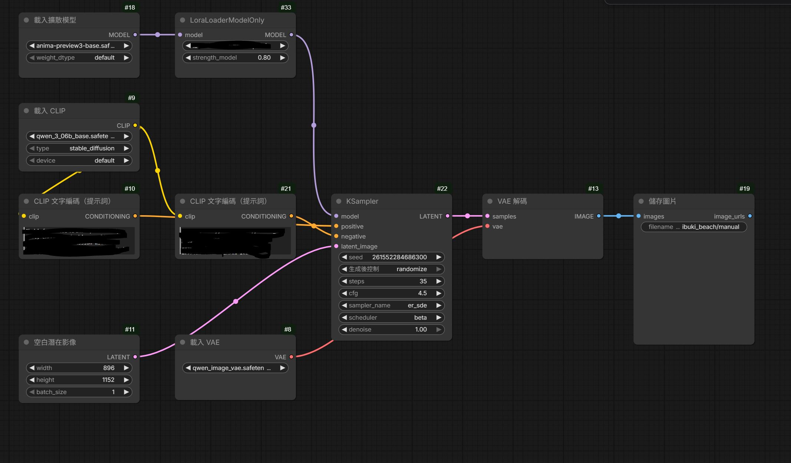
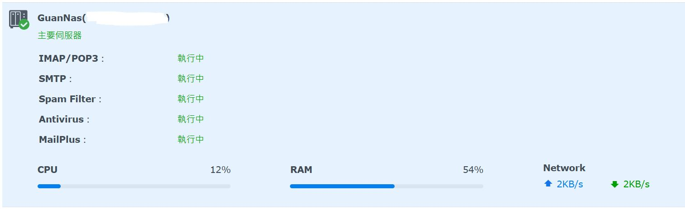

ReTrust — 會員系統
二手交易與租借平台的會員系統・五人團隊・2026.05 – 2026.08
團隊專案中獨立負責會員系統的前後端，交付 42 支 RESTful API、13 張資料表與 36 個前端檔案， 個人程式碼約 15,500 行，是專案中提交量最高的貢獻者（占全隊 commit 數約 35%）。
C#ASP.NET Core (.NET 10)EF CoreSQL ServerVue 3PiniaJWTOAuth 2.0
ABOUT ME
從倉儲、行政到半導體業助理管理師，我做的一直是「把流程理清楚、把資料整理成別人看得懂的樣子」， 這也是我後來走軟體開發的原因。
TECH STACK
後端以 C# 為主，前端用 Vue 3，兩邊都能獨立完成並交付。近一年的重心放在把本地大型語言模型接進實際產品。
PROJECTS
二手交易與租借平台的會員系統・五人團隊・2026.05 – 2026.08
團隊專案中獨立負責會員系統的前後端，交付 42 支 RESTful API、13 張資料表與 36 個前端檔案， 個人程式碼約 15,500 行，是專案中提交量最高的貢獻者（占全隊 commit 數約 35%）。
用 llama.cpp 架設文字與視覺兩台獨立推論服務，並自己寫了一層相容代理， 把既有腳本慣用的 Ollama API 翻譯成 OpenAI 格式——二十來支腳本一行都不用改。 兩台服務閒置一秒就吐回顯存，讓 ComfyUI 生圖時不會被佔住。

透過 ComfyUI 建立可重複執行的文字生圖流程，並結合本地語言模型， 將自然語言需求整理成影像與影片生成提示詞；整套流程皆在本機端完成。

在 Synology NAS 上建置自有網域服務，含郵件伺服器、密碼管理、媒體與藏書系統， 皆可由外網存取。完成 MX 與 DKIM 等寄件網域驗證設定確保送達率—— ReTrust 的驗證碼信就是從這台寄出去的。
EXPERIENCE
結訓專題為 ReTrust 的會員系統。